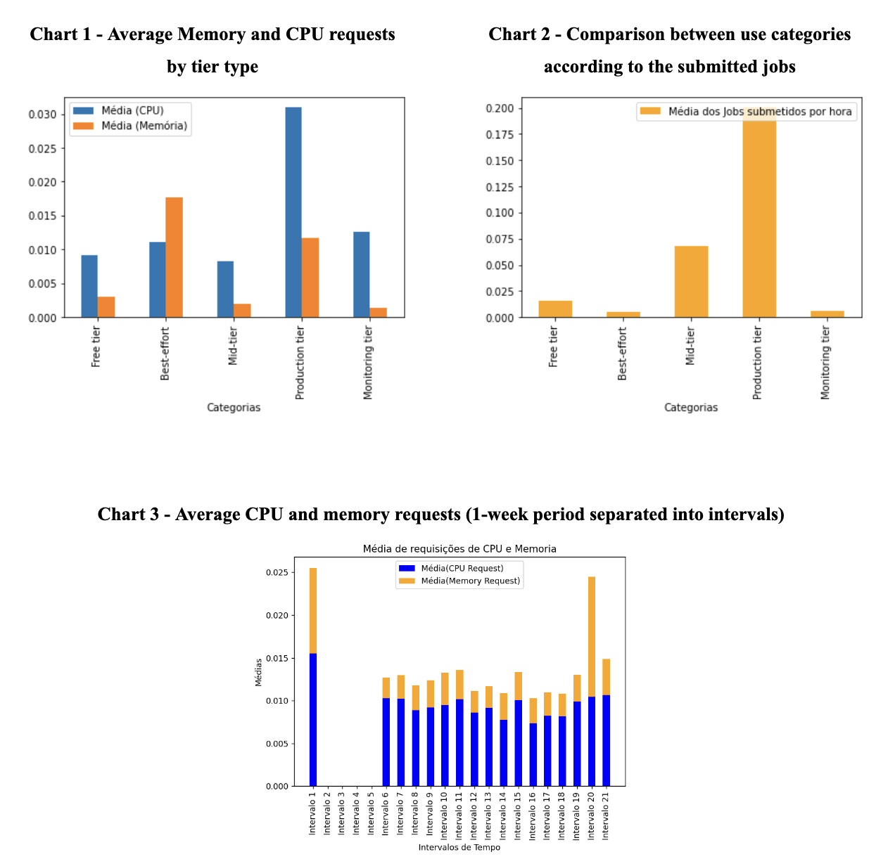
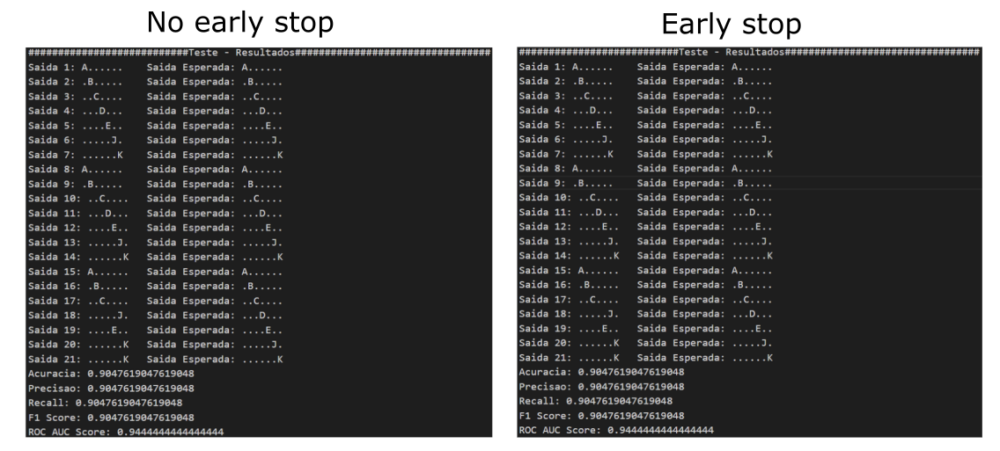

Luan Monteiro
Graduated in B.S. Information Systems - Universidade de São Paulo
Portfolio
Automated tests for Google Maps(Playwright) - Repo
Testing automation project for Google Maps using Playwright framework with NUnit. It focuses on testing location search functionalities.

Automated testing for Logic Pic Game(Unity)
Automated tests developed for the Logic Pic game, these are high-level tests implemented using Behave/Cucumber Framework and python. The developed tests are applicable to any game level, so even if a new level is created, the tests will still work.
Website platform created with use of automated tests - Repo
Exam creation web platform implemented using Ruby on Rails, using its automated testing features to ensure seamless functionality.
Ants: Leaf Raiders
Game for iOS and Android using Godot.
Super Plants - Repo
Game in development where players cultivate procedurally generated plants.
Protect The Body(Godot) - Repo
Game created at USP Game Dev with 3 colleagues.

Mesh deformation shaders for a game still in progress(Unity) - Repo
Mesh deforming shaders for a Unity Game I'm developing. The first shader animates the seal's mouth based on an angle input that determines the mouth's openness. The second shader utilizes a texture dictating how the seal should inflate; This texture is obtained through an Animation Curve transformed into a texture. The third one animates smoothly the character movement.


Minesweeper(Unity) - Repo
Minesweeper game developed in Unity. A version of the classic Minesweeper.

Bomberman Clone(Godot) - Repo
Bomberman adaptation, created using Godot, emerged from collaborative efforts within USP Game Dev alongside three talented colleagues.

Google clusters data analysis - Repo
Data analysis using spark to analize google clusters data and answer some questions in respect to the resources usage, such as: "How many jobs are submitted per hour?", "How many tasks are submitted per hour?", "How long does it take for the first task of a job to start being executed?", What is the frequency of each job type for job events?...

Webpage to access stock data - API Repo | Frontend Repo
Webpage using Redis to store historic stock data for quickier access. The API to access the stock data is implemented using Python(Flask) and the Frontend using React.
Neural network(MLP) for character identification - Repo
Artificial neural network Multilayer Perceptron (MLP) for character recognition.
